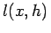
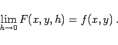
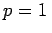
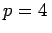

Inhalt Index DeskTop Bronstein

 Numerische Mathematik Integration gewöhnlicher Differentialgleichungen Anfangswertaufgaben Konvergenz, Konsistenz, Stabilität
Numerische Mathematik Integration gewöhnlicher Differentialgleichungen Anfangswertaufgaben Konvergenz, Konsistenz, Stabilität


Die Konvergenzordnung gemäß (19.111) gibt an, wie gut die Näherungslösung y(x,h) die exakte Lösung y(x) approximiert. Darüber hinaus ist die Frage interessant, wie gut die Zuwachsfunktion F(x,y,h) die Ableitung y' = f(x,y) annähert. Dazu führt man den sogenannten lokalen Diskretisierungsfehler  (19.112) ein und sagt: Das Einschrittverfahren (19.110) ist konsistent mit der Ordnung p, falls p die größte natürliche Zahl mit
ist. Für ein konsistentes Einzelschrittverfahren folgt aus (19.112) unmittelbar
|  | (19.113) |
| Beispiel |
|
Das EULERsche Polygonzugverfahren (19.97) hat die Konsistenzordnung , das RUNGE -KUTTA-Verfahren (19.99) die Konsistenzordnung . |